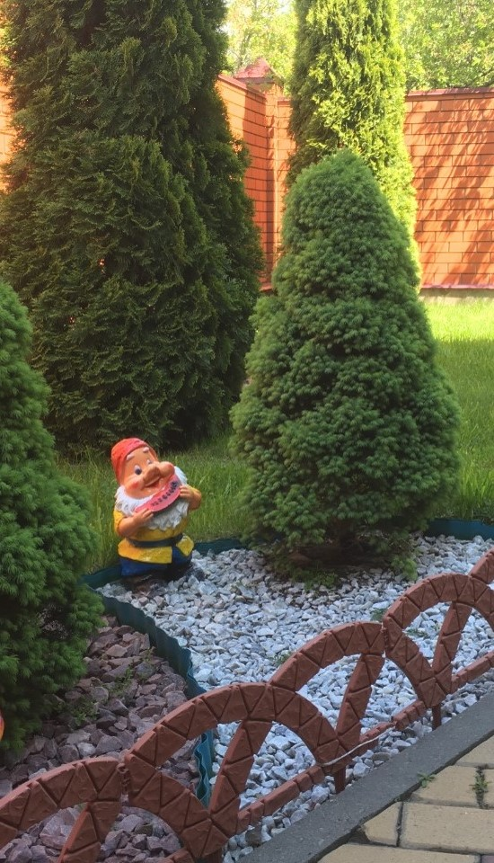

Мы снимаем не только ваши запросы, но показываем возможные проблемы, которые могут возникнуть позже и решаем их еще на стадии проектирования.
Например, гибкость переделки полива при изменения ландшафтного дизайна или пересадки деревьев,более автономное использование теплиц, удобство пользования детскими площадками и т.п.
Кроме того, мало какая система, работающая на улице может похвастаться сроком службы более 10 лет. Мы устанавливаем именно такую.